⌘
Connected Workflows
Linking people, information and applications to make day-to-day work more seamless.
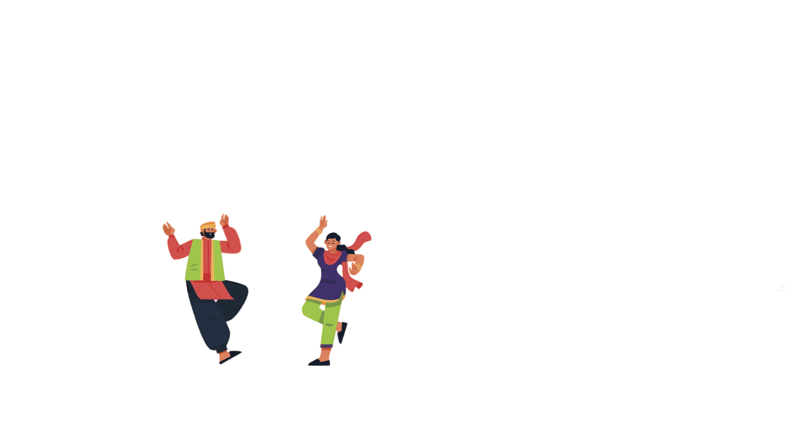
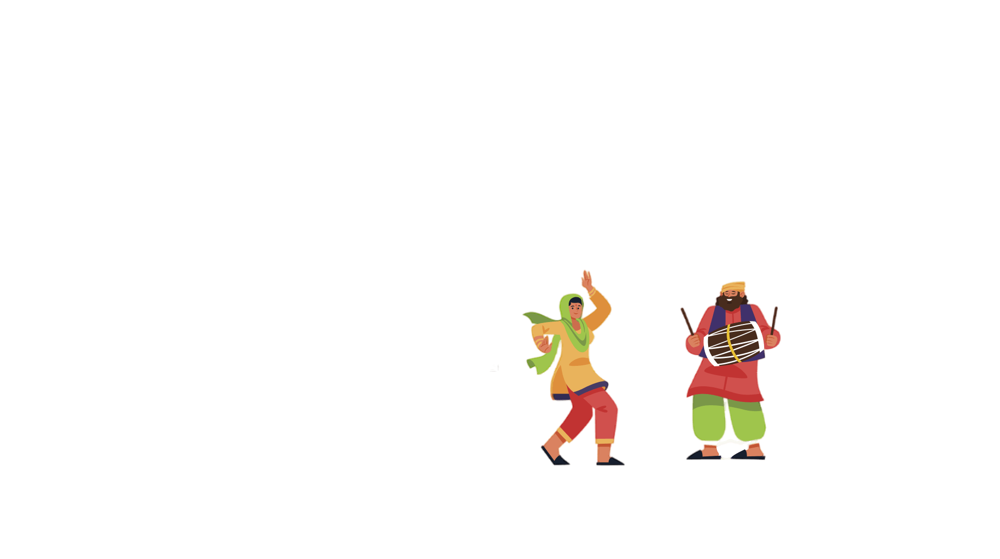
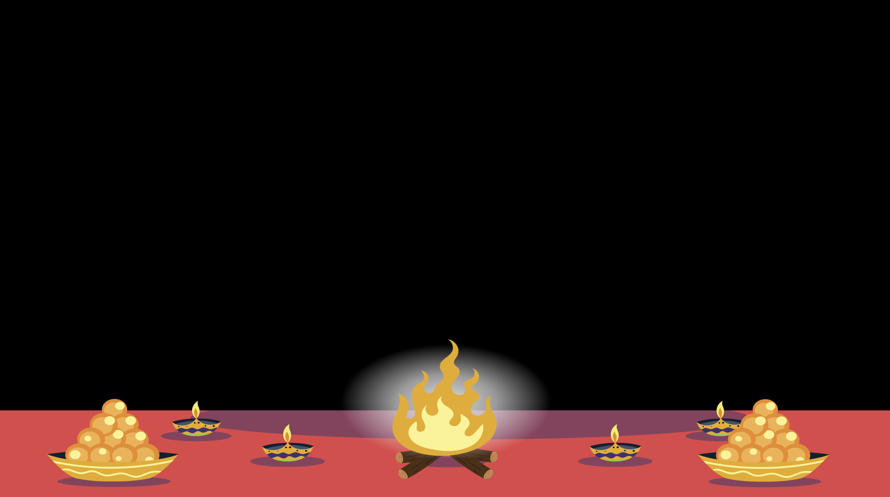
This Navratri, we celebrate the power that connects people, protects information and turns ideas into meaningful digital solutions. Welcome to our world of technology, creativity and teamwork.
Nine IT strengths move around the nine forms of Maa Durga. Select a point to explore its role.
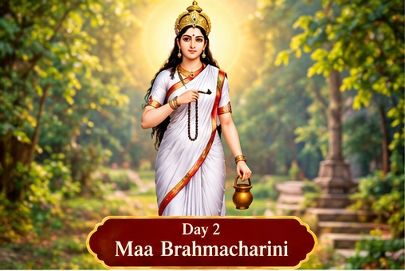
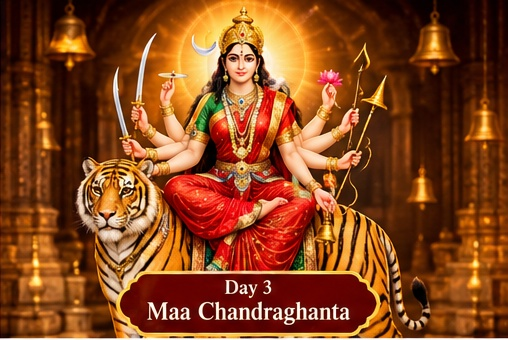
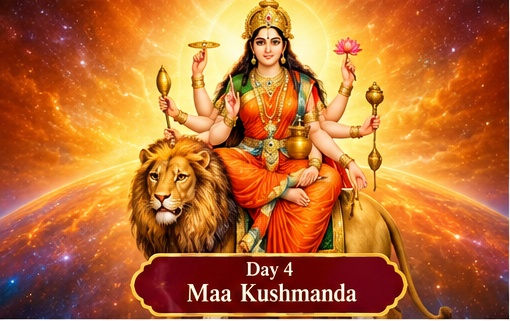
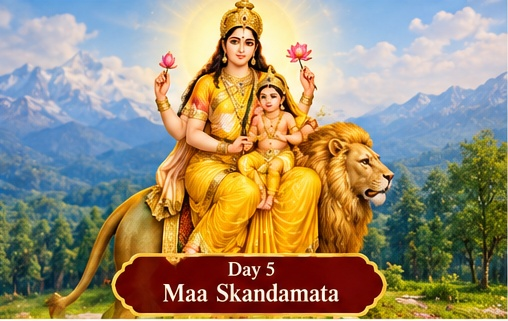
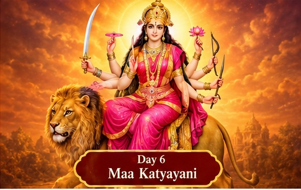
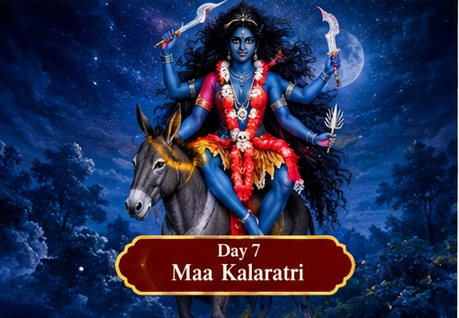
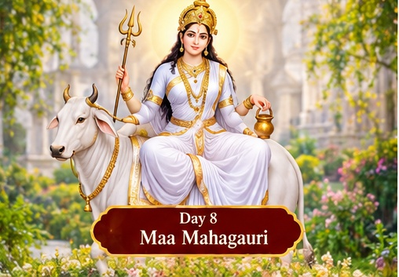
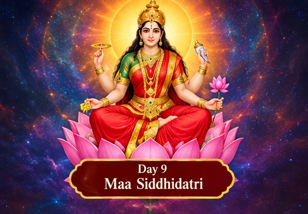
Photos: Jonoikobangali, CC BY-SA 3.0; Redtigerxyz / Adamina, CC BY 2.0; Suraj Belbase, CC BY-SA 4.0. Images resized for display.
Shailaputri · Jonoikobangali Brahmacharini · Redtigerxyz / Adamina Chandraghanta · Jonoikobangali Kushmanda · Jonoikobangali Skandamata · Jonoikobangali Kalaratri · Jonoikobangali Mahagauri · Jonoikobangali CC BY-SA 3.0 CC BY 2.0 Katyayani · Suraj Belbase Siddhidatri · Suraj Belbase CC BY-SA 4.0Technology has value when it solves real problems. These themes represent the ways an IT team can help make work simpler, more connected and more effective.
Linking people, information and applications to make day-to-day work more seamless.
Replacing avoidable manual steps with clearer, trackable digital processes.
Using monitoring, troubleshooting and automation to support dependable services.
Exploring practical improvements with creativity, teamwork and responsible technology.
For a personalized showcase, replace these general themes with approved examples of your team's real projects. Do not publish confidential internal links, screenshots, names, or operational data.
Meet the people and skills that keep our digital workplace connected, secure and moving forward.
Sample profiles for layout preview. Replace names, photos and details with approved team information.
Wishing everyone a joyful and inspiring Navratri.
— Haier IT Department
Back to the beginning ↑